1.Two Sum
官方思路:
- 双重循环，比较简单略过
- 两次循环的hashmap实现，第一次循环把键值对一次放入，第二次循环查找。
- 一次循环的hashmap实现
思路整理：
比较容易想到双循环的思路，但复杂度n方不是最优解。我首先想到的是思路二两次循环hashmap，速度从74ms提升至2ms。这里需要 注意的是判断目标数字下标位置时需要避开当前位置。举个例子【3，6，3】target = 6时不注意的话第一个3会匹配到自己而不是第二个 3。第三个思路巧妙在于不直接一股脑把键值对全塞进去，而是仅在当前元素没查到对应值时才把当前元素和下标存入hashmap。举个例子 官方例子中首先检查2，没查到7于是2，0键值对进入hashmap，接着检查7就直接查到了满足条件的键2于是算法直接返回。此方法阻止了 在构建整个hashmap时无谓的浪费时间，将速度提升至1ms。
2.Add Two Numbers
官方思路:
- 构建新链表，每个listnode的值依次为两个链表值之和。如果有进位则记录在carry中并在下一次循环时算入总和，最后如果两个链表遍历均完成仍有carry，在结果末尾链接新listnode值为carry。
思路整理：
经典链表操作，创建head和curr，curr指向head，通过移动curr构建链表，head用于保存头部位置方便返回结果。难点在于边界条件处理。同时遍历两个链表，只要其中一个没有遍历完就不终止循环，遍历完成的 链表listnode值算为0。这其实是一种化繁为简，避免了考虑长度不相等的边界条件。要注意的是已经遍历完成的链表指针是停止移动的，否则会抛出npe，因为null是没有next属性的。最后不要忽略了长度相等 遍历完成时carry不是0的情况，要在结果末尾额外添加一个值为1的listnode。
3. Longest Substring Without Repeating Characters
官方思路:
- 暴力解法，略过
- 经典滑动窗口遍历法，i，j一头一尾通过在不同情况下更新 i和 j的值至 i+1或 j+1完成对所有符合要求子字符串的遍历。
- 方法三为方法二的优化使用了hashmap存储char和下标键值对，每次跳跃更新 i的值以达到更快速度。
思路整理：
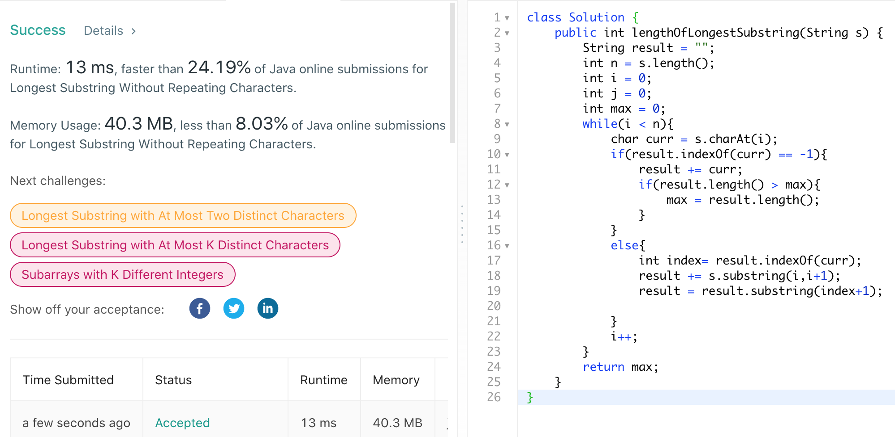我首先想到并通过的解法，但可以看到速度并不算很快。字符串操作速度肯定不如hashset来的快，所以判断重复肯定用hashset是最快的。除此之外我的方法应该和官方答案方法二是等效的，因为都一定要 完整遍历完整个字符串。至于为什么答案用了双边窗口而这种方法只有单边是因为答案二使用 i和 j配合完成对set的更新，而同样的更新如果用字符串完全可以只用一个标记 i就完成更新。方法三的巧妙之处 在于跳过了一些不需要考虑的情况。就拿最简单的b c a a举例子，方法二遍历到第二个a是发现重复了，但此时集合里有b c a必须依次删除所有元素直到集合里没有a，也就是要删除三次。实际上完全可以把 标记i的下标直接从0也就是b移动到3也就是第二个a的位置，效果是相同的。而要达到这种效果必要的是记录每个char的下标所以很自然想到用hashmap存储char和下标的键值对。另外一点就是我发现答案三 的写法有点迷惑因为hashmap存放的并不是直接的键值对而是char和下标位置+1，这样做应该是为了更新i时不用+1但感觉有点本末倒置。如下写法一样可以通过。
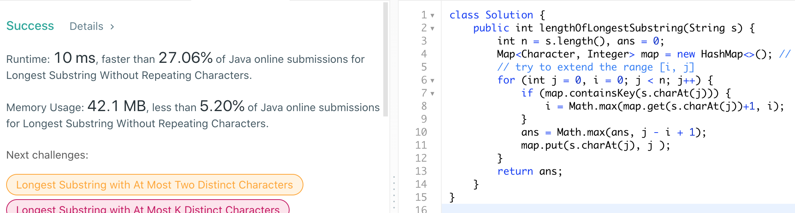5. Longest Palindromic Substring
官方思路:
- 方法一提到可以找s和s的reverse s‘的最长公共字串，但是这种方法存在一个问题。
- 方法二暴力解法略过，复杂度太高。
- 方法三提到动态规划，暂时不做讨论。
- 重点看下方法四中心扩展方法。
- 方法五一种巧解，不用太过纠结这种解法，没见过的很难做出来。
思路整理：
我一开始尝试用双指针窗口遍历解决，但很快发现不现实因为没法做到实时更新窗口大小。比如说abcb明显不是回文数但在遍历到最后一个char之前无法判断，因为后面依然可能跟一个a。 至少在遍历完s长度一半之前完全不能判断如何更改窗口。怎么才能实时跟踪一个string是否还是回文数并更新窗口大小呢。很自然想到中心扩展，每次往两边扩展一个字符（前提是不越界） 一旦新加入的字符左右不相等便可以立刻断定不是回文数了，即返回当前长度。另一个巧妙之处在于处理回文数中心在两个字符中间的问题，答案巧妙的利用一轮遍历解决了这两种情况，即i 从0到长度-1，每次依次将窗口两侧指针的初始下标设定为i，i或者i，i+1，这样遍历即可囊括所有可能性。下面贴出我借鉴答案思路后自行完成的版本，引入了一个max变量判读是否为最长 子串。
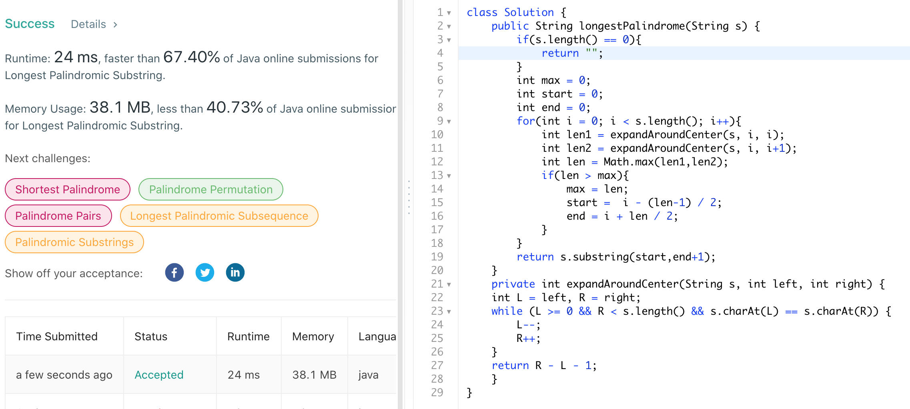6. ZigZag Conversion
官方思路:
- 方法一行锁定法
- 方法二官方叫做行访问法，其实我觉得叫行构建法更直观，因为该方法的答案string是顺序构建出来的。
思路整理：
这种找规律为主的题对数学基础好的应该不难。我首先就发现了规律并按照取模运算的规律做出如下写法，但可见速度很慢。问题在于遍历时没有优化，遍历了很多不需要遍历的字符。
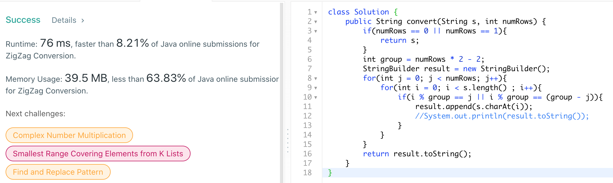参考答案二的思路，我完全可以省略第二个循环里的if判断而直接定位到要append的字符。核心思路还是一样的，找到了原始字符串每n * 2 - 2个字符为一组的规律。方法二主要的优化在于在第二轮循环中j 基于i当前的 位置直接定位到需要append的位置。答案表示把整个string分成三部分即第一行的，最后一行的和其他所有中间的。我感觉这种说法有点迷惑，因为其实所有纵列上的字符被append进入答案时逻辑是相同的而只有处于斜线上的 字符是通过内循环中的if判断进入答案的。所以说分成两大类即纵列上的和斜线上的我认为更合适。 再看答案一，核心思路是先构建出所有的非空行，注意如果string长度比n还要小的情况即可。此时的状态可以看成是构建了刚刚好个数的stringbuilder待写入。剩下需要做的就是遍历完整string并依次判断哪个字符需要append 到哪一行，即填充到哪个待填充的stringbuilder中去。使用两个变量当前行数和当前方向来定位需要填充到哪一行。curow初始值为0，初始方向为向上，每次到达第一行或者最后一行改变方向，每次更新curow需要参考方向的boolean值， 向上即-1，向下即+1，可谓是很自然。两个变量在大循环中互相配合把每个字符append到对应的行中。最后把所有行的stringbuilder串起来就大功告成。个人认为这种想法不是很自然。
7. Reverse Integer
官方思路:
- 官方解法略迷，推荐下链接里的解法。
思路整理：
这位老哥巧妙运用了在不overflow的前提下数学算式算式的恒等变换恒成立这一性质。说白了就是就是对一个数做了什么操作得到了什么结果，对结果你操作就应该得回那个数。如果不是就只能说明发生了overflow。还有一个朴实点的方法 就是用long来存储答案，当答案越过int的存储界限时返回0。最后强制转型成int返回，不然会因为损失精度报错（其实没有损失，只是java不支持不安全的转型）。如下：
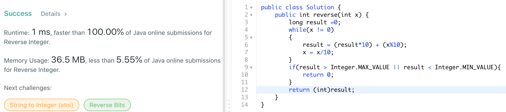8. String to Integer (atoi)
官方思路:
- 官方没有解法。
思路整理：
非常无聊的一个ifelse练习，只有几个地方要注意。第一去掉空格可以用trim方法，这样可以不用单独去判断空格。第二正负号的判断，正号判断意义不明但是依然要做判断，注意只需要在去掉空格后判断一次即可，后面出现再多正负号也和字母一样当作杂音处理 立刻返回结果即可。第三是整数overflow判断，预先把结果保存在long变量中，在返回前判断是否overflow即可。
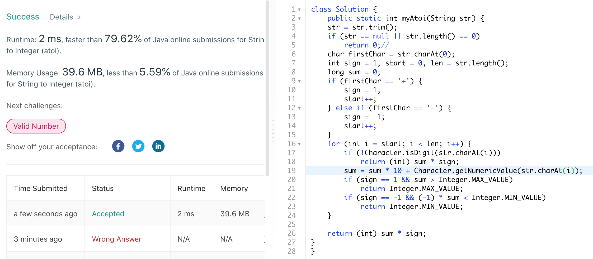9. Palindrome Number
官方思路:
- while循环中每次取mod10，乘上10，x/10，循环后如果结果和初始的x相等则为回文数，比较简单就是利用回文数的性质。
思路整理：
我首先想到的是转换成字符串再比较的方法，速度并不快。猜测原因为java中字符串操作比arithmetic慢，因为int，double等均为原始数据类型，jvm初始化时直接为该类型分配内存地址。而string则是对象。感觉能用primitive data type解决就不要用 object类型。
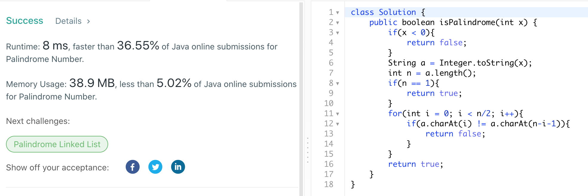11. Container With Most Water
官方思路:
- 暴力解法
- 双指针一次循环遍历
思路整理：
很容易想到的双指针循环遍历法，初始指针设置在两侧，每次判断两侧夹板的长短，奖短的一侧往相反方向移动（移动长的一侧并不能改变当前最大容积），实时更新max即可。官方答案有一段清晰的解释：Initially we consider the area constituting the exterior most lines. Now, to maximize the area, we need to consider the area between the lines of larger lengths. If we try to move the pointer at the longer line inwards, we won't gain any increase in area, since it is limited by the shorter line. But moving the shorter line's pointer could turn out to be beneficial, as per the same argument, despite the reduction in the width. This is done since a relatively longer line obtained by moving the shorter line's pointer might overcome the reduction in area caused by the width reduction.
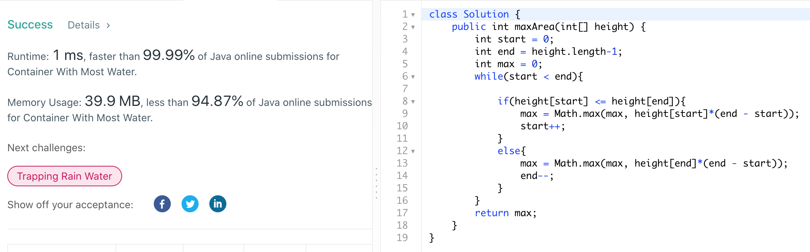12. Integer to Roman
官方思路:
- 贪婪算法
- hardcode
思路整理：
贪婪算法本质是每一步取当前的局部最优解从而去近似全局最优解。在这里贪婪算法是准确的，即最终结果就是全局最优解。在题目给定范围内罗马字母和他们对应的数字一共只有十三种情况。每次减掉当前所能减掉的 最大的数字直到减为0。实现如下。（评论区看到的比较自然的一种写法，官方答案里第一个for循环就很迷） hardcode法干脆连循环都省了，利用了可以取到每一位上的数字这个特性为个十百千位分别hardcode了一个数组，接下来依次计算各个数位上的具体数字再根据数字append对应数组上对应位置的罗马数字即可。 个人很不喜欢这种思想，从软件设计角度来看这种做法是不利于维护的。比如像哪一天罗马数字的规则改变了那么所有数组可能都要大改，相对的第一种解法只需维护一个数组即可。官方答案也提到了这一点。

13. Roman to Integer
官方思路:
- 从左至右循环，hashmap，每次检查下一个字符和当前字符比较，顺序则加上当前值，发现逆序则改为加上下一个字符的值与当前字符值之差。
- 从左至右循环改良版。将两个字符组成的罗马符号和对应数字键值对也加入hashmap，循环时检查是否出现两个字符组成的罗马符号，出现则加上其值，未出现则是普通情况，同样加上其值。
- 从右至左循环，每次只需要当前字符的值而无需考虑两个字符的情况。利用了两个字符一组时右侧的单个字符的值永远为正这一性质，避免了每次判断下一个字符是否越界的计算量。即省去了这一判断：if (i < s.length() - 1)。从右向左正常情况 current应该大与last，如出现current小于last则说明出现了逆序情况，此时应该改为减去current的值而不是加上。
思路整理：
当看到这种有序键值对的时候hashmap是一种自然的想法。个人感觉方法一和三没有本质的区别。二稍显的有点不自然。每次通过观察当前字符的值和后一个或前一个字符对应的值的大小关系来处理逆序的情况是 很自然一种想法，至少我第一下想到的是这种思路。剩下的要点就是要马上想到用hashmap，不然要判断逆序情况会比较麻烦。
14. Longest Common Prefix
官方思路:
- 水平扫描,初始prefix设置为第一个元素，运用indexof检测prefix在其余元素中出现的位置均为0，一旦不满足条件就将prefix尾部字符cut掉，逐步缩小prefix直到满足要求的prefix出现。
- 纵向扫描，水平的优化。扫描第一个元素的每个字符，一旦发现当前prefix长度超过后续元素长度或者当前扫描的字符和后续元素对应位置上的字符不一致，则更新prefix为substring（0，i）。
- 分治
- 二分查找
思路整理：
重点看下前两种方法。纵向扫描的优势在于如果数组末尾存在一个很短的string，横向扫描的效率就会变的很低。普通情况下横纵向扫描复杂度是一样的，只是纵向提高了下限而已。后两种想法可行但是感觉放在这里实在不太自然。
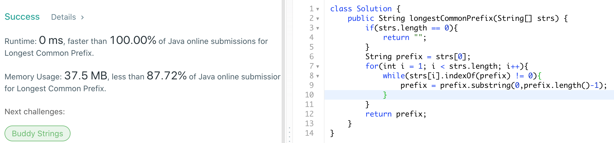 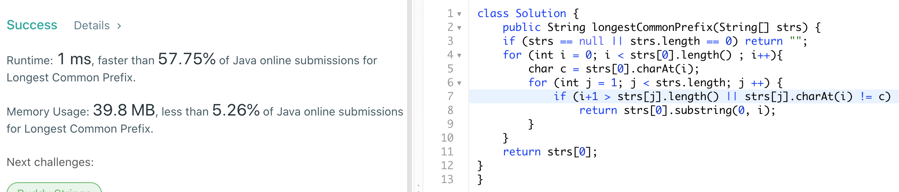15. 3Sum
官方思路:
- 双指针，把问题拆解成一个单循环和一个twosum问题。不是很喜欢答案的写法。推荐下面的写法。 双指针
- hashset，不喜欢答案的思路相当晦涩难懂，推荐下面的写法。 hashset
思路整理：
一开始尝试用二分查找，后来发现忽略了不能有重复的问题而二分查找无法很好地处理去重的问题。因此就必须锁定需要查找的区间，于是自然联想到双指针的思路。 另外想到提前对数组排序很重要可以让问题瞬间简化不少。此题有两种去重思路，一种是利用hashset自带的性质去重（集合不允许重复元素），代价是慢需要500ms左右。官方第二种解法优化后仍需要235ms。另一种是正常arraylist在循环时就跳过重复的元素，速度快只需20ms左右。
16. 3Sum Closest
官方思路:
- 双指针，把问题拆解成一个单循环和一个twosum问题。写法如下。
- 二分查找，每次固定两个数，在剩下（右侧）的数组里寻找complement（target减去前两个数）。
思路整理：
第一种双指针法和上一道3sum很像，但是有两个地方需要注意一下。第一点，当sum就等于target时可以直接返回，因为此时已经不可能存在一个比0绝对值更小的数，即已经找到了答案。 第二点，当nums【i】的值大于target时可以直接返回当前答案，因为数组是排好序的，继续向后寻找也不可能找到一个比当前更接近target的答案。这两个地方及时返回答案可以节省不少时间， 而提前排序可以试此类问题简化不少。这道题的解法显然是双指针更自然。二分查找利用了查找结束时如果没有sum==target的情况，lo和hi正好分别对应两个使sum最接近target的位置，之后只需要判断哪一个更接近然后更新答案即可。二分查找在复杂度上要比双指针慢一个logn。
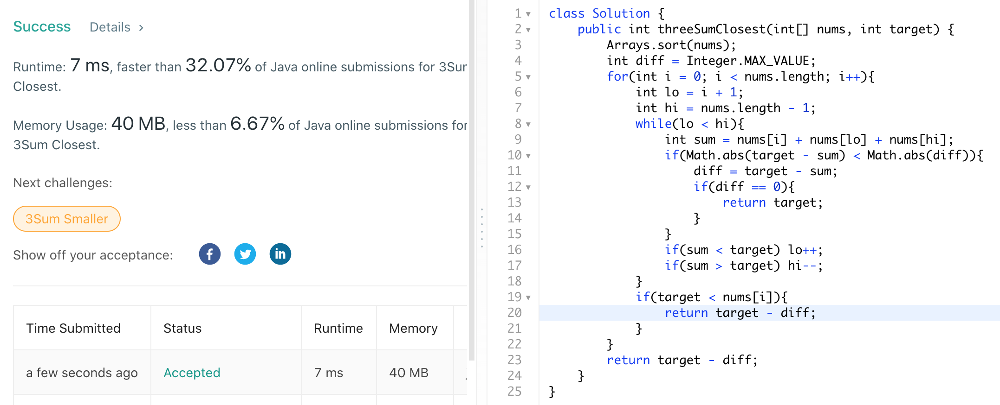17. Letter Combinations of a Phone Number
官方思路:
- backtracking 回溯，推荐评论区看到的如下写法。
思路整理：
因为需要把数字映射到一组字符上，很自然想到建立hashmap。假设输入数字为23，2对应abc，3对应def，我们首先要把a对应到def，然后是b对应到def，最后是c。当输入数字很长时就需要一层层地按深度优先顺序找出所有组合。 backtracking正是解决这种有层次调用的有力工具。与recursion相同需要先想好一个退出条件，此题中当字符长度等于数字长度时即退出（找到了一个符合条件的组合）。用stringbuilder可以提高速度，因为不用创建多个string对象，而是对同一个sb对象反复修改， 但同时要注意在循环结束之前去掉当前sb对象的最后一个char，否则之后的sb对象会一直带着这个字符。下面以23为例将回溯过程过一遍，首先index初始值为0，初始sb为空，当前数字为2，对当前数字对应的所有字符（abc）做循环，sb添加当前字符后进入递归。首先添加a，index+1，对应数字3， 3对应字符为def，a添加d，达到退出条件，答案添加ad，删除d，a添加e，ae达到条件退出，删除e添加f，退出删除f，此时最大的循环即abc循环结束，删除a，添加b进入下一个小循环，同理添加bd，bd，bf，删除b添加c，进入最后一个大循环添加cd，ce，cf，整个循环结束返回结果。
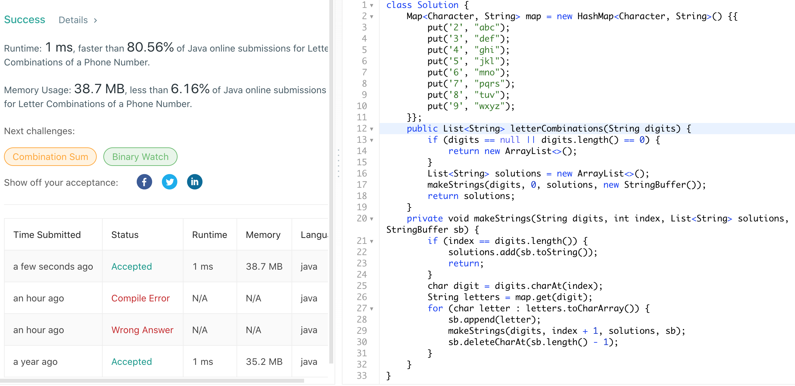18. 4Sum
官方思路:
- 没有官方标答
思路整理：
借鉴了15题的思路，拆分成两个循环和一个双指针循环，去重选择了hashset虽然速度较慢但无需考虑诸多边界情况（比如何时跳过当前元素），只要遇到和为target的数组就放进hashset，hashset会自动帮你去重。 如果追求速度用arraylist就要注意当当前元素和上一个元素相同时跳过当前元素来去重。
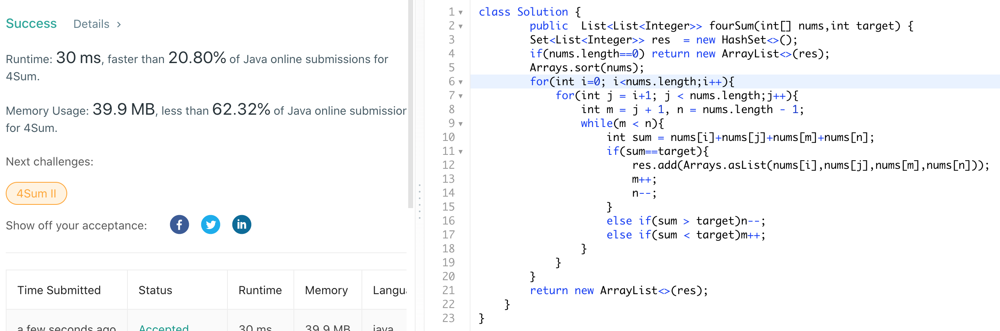19. Remove Nth Node From End of List
官方思路:
- 两遍循环
- 一遍循环
思路整理：
两边循环还是比较好想到的。第一遍循环找到总长度，第二遍循环找到需要删除的节点前一个节点的位置，将下一个节点连接到下下个节点即可，此时中间的节点相当于被删除了（没有指向它的引用，被当作垃圾回收）。 第二种思路一遍循环相对比较巧妙，用两个指针来遍历链表，初始距离一个指针设置在最开头（一般为dummy，指向head），第二个设置为距离第一个指针n个节点的位置。然后遍历链表直到第二个指针的下一个节点为空， 此时第一个节点的位置正是我们要找的位置，其他操作同方法一。
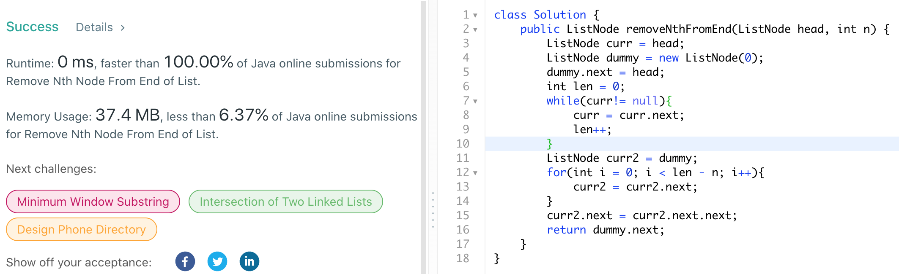 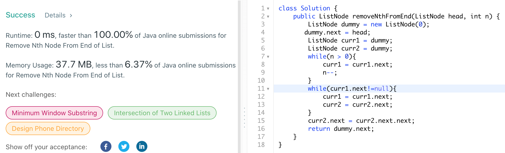20. Valid Parentheses
官方思路:
- stack + hashmap
思路整理：
stack的思路不难想到，个人感觉用string还是hashmap无所谓。唯一难点在于提前考虑到种种边界情况，一开始漏掉了stack为空的情况，即只有右括号没有做括号，简单debug后给出了如下答案。 需要保证的是每当遇到一个右括号且stack非空是弹出的stack顶元素是对应的左括号（是空说明没有左括号直接返回false），stack先进先出的数据结构正适合这一思路。
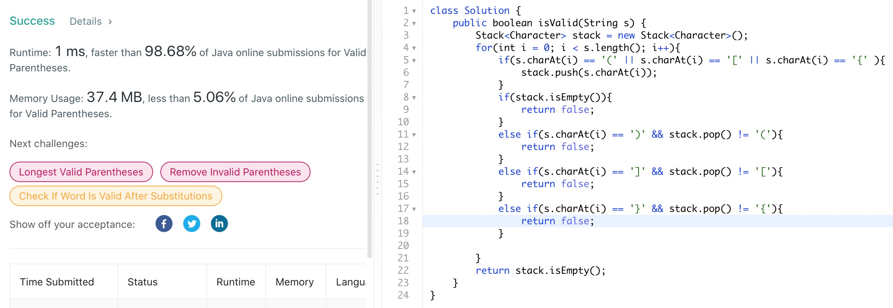21. Merge Two Sorted Lists
官方思路:
- recursion
- 循环链表
思路整理：
循环链表方法要注意当l1和l2的两个指针均不为空时才能继续循环，否则其中一个为空时循环继续当比较node值大小时会抛出空指针异常，其他就是依次比较当前两个指针对应node的值大小，将小的接入答案 然后对应指针后移一个node即可。最后注意将没遍历完成的链表接入答案中。迭代同理要注意两个终止条件，l1遍历完则返回l2剩下的，l2遍历完返回l1剩下的。迭代时遵循返回最小的头部 + merge剩下的 链表的准则。一个口诀就是每一步返回当前要做的事加上迭代调用一个范围缩小了一点的同样的问题。放在这里就是每一步找到两个链表较小的那个头部，把这个头部接上（这个头部之后的链表和另一条链表的merge）， 然后返回这个头部。每一步不考虑之前或之后的事，只考虑此时该做的事。
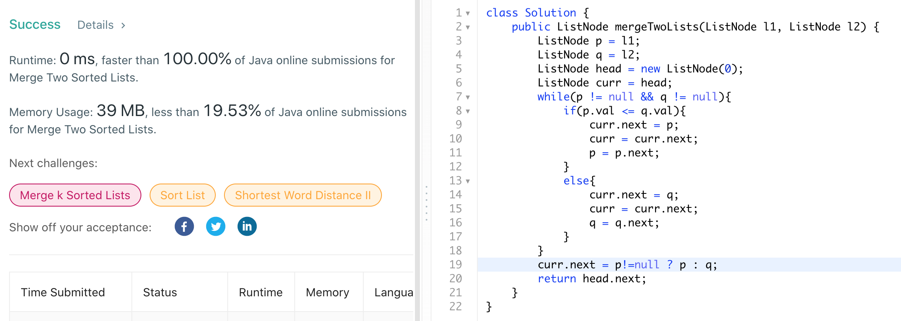22. Generate Parentheses
官方思路:
- 暴力解法
- 回溯
- closure number：想法过于小众，不多做讨论
思路整理：
此题可以类比第17题，都是求某种条件下的全部组合，有一个明确的终止条件。想象一下每添加一个括号或者字符，就出现多个岔路（不同的选择），但是殊途同归，最后满足一定条件时添加结束。这种场景就是 回溯算法发挥作用之处，因为无需在每一步操作后思考之后的各种可能性，而是通过递归地操作将每一步及之后的每一种可能性一网打尽。终止条件很明显当长度为2n时停止，其他总共只有两种情况，左括号数量小于n 或者右括号数量小于左括号数量，分开成每一步考虑就是添加一个右括号后，既可以添加下一个右括号（右括号总数小于n），也可以添加一个左括号（前提左括号数量小于右括号）。之后只需要递归地调用添加方法即可。 习惯性用了stringbuilder，但在这里并不会改善速度因为即使用string也只是维护一个string没有创建多个string对象。需要注意的是stringbuilder在递归调用之后需要删除最后一个字符即可。
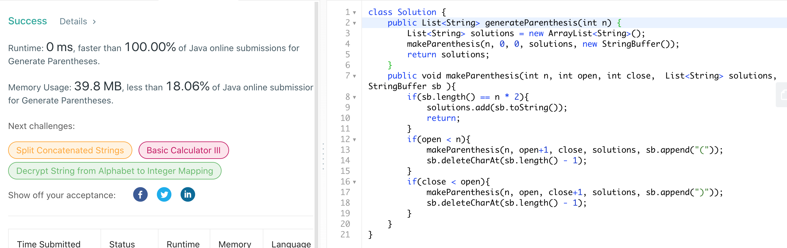24. Swap Nodes in Pairs
官方思路:
- 迭代
- 循环
思路整理：
先来看循环的思路，每次循环涉及到两个相邻的node，即firstnode和secondnode，但是同时我们还需要firstnode的前一个node，因为我们需要在单次循环中完成的是将firstnode的上一个node连在secondnode上， firstnode连在secondnode的下一个node上，再把secondnode连在firstnode上。需注意这不是双向链表，所以secondnode的下一个node可以用next引用到，但是firstnode的上一个从哪里来呢？很自然一个想法是 从一开始就一直维护这样一个node的索引（题目中叫prevnode）。链接好这次循环中的链接后还需要为下一个循环作准备，即更新prevnode和head。此时下一组node的前一个node正是firstnode，所以更新prevnode为 firstnode，而head此时指向fistnode，所以只需要把head更新为firstnode的下一个node即可（画图对于找出各个链接的正确顺序及位置很有帮助）。一个需要注意的地方是在把secondnode指向firstnode之前，需要 先把firstnode链接到secondnode的下一个node上，不然如果先将secondnode的下一个node更改为fistnode就会丢失secondnode原来的下一个node的引用，firstnode此时就无法指向下一个node从而使链表循环断开。 迭代的思路相对比较抽象但是万变不离其宗，迭代的本质是解决当前（或者最初）需要解决的问题，并且把之后的问题推给一个范围缩小了一步的元问题。放在这道题，我们一开始需要做的就是把head和head的next交换。另firstnode 指向head，secondnode指向head.next，此时需要做的是把fistnode的连接到以secondnode.next为head的范围缩小一点的同一个问题，然后把secondnode链接到firstnode，然后返回secondnode即可（此时交换完成链表的首个node 变为secondnode），整个问题就结束了。看似只做了一次交换，其实后续所有的交换都会在下层栈中递归完成交换，只是我们无需关心而已，这正是递归的牛逼之处。终止条件是head为空或者head的下一个为空，自底向上完成递归（叫backtracking 其实也可以）。
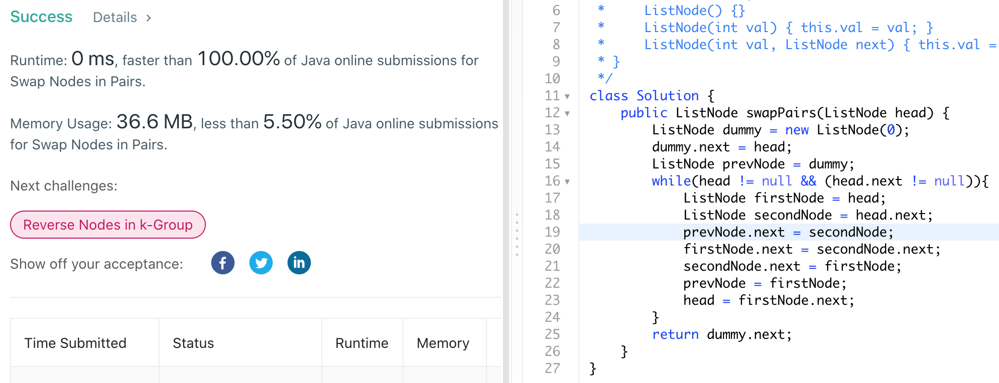 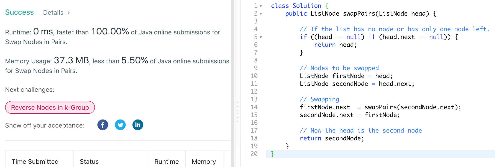26. Remove Duplicates from Sorted Array
官方思路:
- 双指针
思路整理：
比较简单，因为不让用额外空间，也就说明只能改动原数组。可以类比选择排序的过程，很自然想到遍历数组的同时维护一个指针（从0或者1开始都行），使得指针左边永远是没有重复元素的状态。循环中每当遇到一个 之前有过的元素就直接跳过，遇到不一样的时候把它移动到指针位置（指针向后移动一位），这样一个个选择出每一个不重复的元素。这样遍历完成后，指针之前的数组全部是没有重复的。
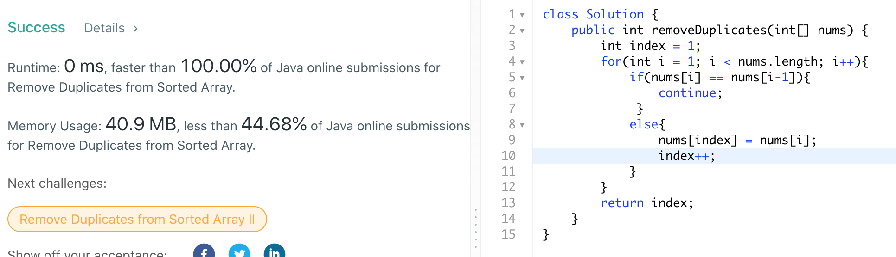27. Remove Element
官方思路:
- 双指针
思路整理：
与上一题过于雷同，略。
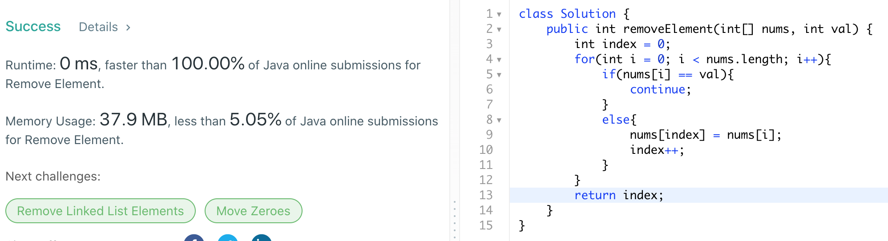28. Implement strStr()
官方思路:
- 线性滑动窗口
- 双指针滑动窗口，官方答案感觉略迷，自己整理了一下，如下。
- 比较小众的思路，可自行查阅标答。
思路整理：
假设待查找字符串长度为l，需要查找的字符串长度为n。线性滑动窗口只维护一个指针，遍历待查找字符串，每次查找从当前下标延伸到之后n个的substring与需要查找的字符串是否一致，
一致则返回当前下标即可（注意遍历时不越界）。
双指针的优化在于可以减少遍历的次数。维护两个指针，一个负责遍历，一个负责匹配。每次第一个指针直接寻找下一个以needle开头字符匹配位置，从那里试图匹配出完整的needle，一旦失败就
就让第一个指针回退到上一个字符相同的位置的下一个位置，即当前匹配失败的位置减去成功匹配字符的个数再加一。（注意不要退回上一个字符相同的位置，会引发无限循环）。接着寻找下一个头字符相同的位置，试图匹配出完整的needle。
29. Divide Two Integers
官方思路:
- 循环递减
- 循环指数搜索
- 方法二改良
- 位运算
- 基于位运算的一种小众想法
思路整理：
很多地方值得注意的一道题。首先限定integer范围的这类题有一个大坑，即integer.MIN_VALUE -2147483648 的绝对值是 2147483647，即正反所能扩展的最大范围不是对称的，从而引起诸多边界条件下的问题。此题我总结了三点需要注意， 第一，当想要统一正负号时候一律往负数上统一，原因很简单，负数的包容范围比正数大1.使用两个负数可以组合出所有正数，而反之则不然。例如-2147483648就无法表示成正数。第二，避免使用乘法，我一开始为了判断负号个数将两个数乘积为 正分为一类，为负一类，结果导致了overflow。第三，最特殊的情况最先处理，例如此题（-2147483648，-1）这对组合就要最优先处理避免正数最大值溢出。第二和第三种方法都是基于幂运算来提升速度，主体思想是每次直接将divisor翻倍直到 divisor的某一个倍数超过了dividend，然后直接在结果上加上2的对应次幂。重复此过程直到divisor和divident之间已经无法再容下一个divisor，即找到了答案。方法三利用了缓存的思想，把方法二中计算过的divisor的二次幂倍数存放在一个动态数组中， 当翻倍后超过dividend时直接将指针向左移动依次填充已经缓存过的可用二次幂倍数直到无法再装下一个divisor为止。方法二和三都是logn级别复杂度，方法一则是o（n）。方法四提出不需要方法三中的数组缓存而可以直接通过位运算来取得需要 的值，即向右构造的数组中的值都可以在取得最大二次幂后通过向右位运算来取得，两者没有本质的区别而位运算效率更高速度更快。
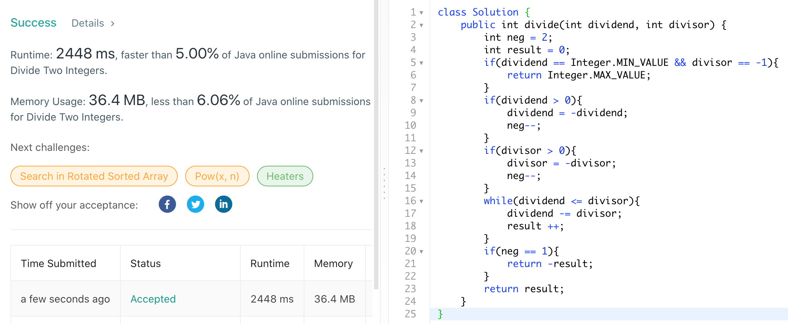31. Next Permutation
官方思路:
- 暴力解法
- 一遍循环
思路整理：
本题旨在从后往前找到第一个升序的数对（i-1，i），然后将其中较小的数（i-1）和他之后的降序数组中比他大的中最小的那一个数交换位置。到这一步都不难想到，之后一步很关键，想不到的可能要浪费时间了。注意到换位后 i-1之后的数组依旧是有序的（之前i-1位置上的数一定小于交换后的i-1位置上的数，否则不会交换），此时我们离要寻找的下一个排列就只差一步，即是将i-1之后的数组逆序。其实很自然的一个想法，看一个例子。1，4，3，2，0 对 这个数组寻找下一个排序。首先找到第一个升序对，即1和4，此时i为1，i-1位置上是1，此时右侧比1大的数中最小的是2，交换1和2的位置得到，2，4，3，1，0. 注意到2右侧数组依旧是有序的，此时下一个排序需要的就是把此时2右侧的数组 代表的数字变成最小的，最简单的做法当然就是直接逆序，即2，0，1，3，4 就是我们要找的答案。实现中用双指针可以简单定位到i-1对应的数字和右侧比他大的最小数字j，之后的交换和逆序常规操作即可。
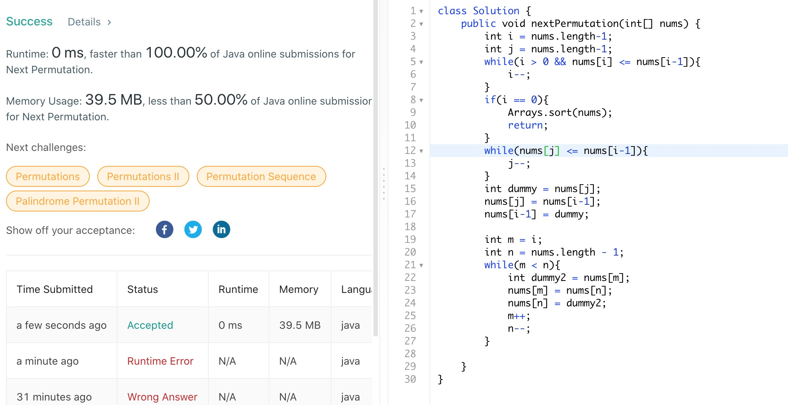33. Search in Rotated Sorted Array
官方思路:
- 二分查找
- 一遍循环二分查找（重点）
思路整理：
方法二可以说是标准二分查找的一个变形，即在移动左右指针之前多加一步判断。每次切分还是三种情况，mid位置正是要查找的值，找到了。mid位置的数小于等于end位置的数字，此时mid到end之间的数组是有序的，那么如果target落在这个区间， 就可以把start更新为mid+1，如果target不在这个区间则落在无序区间内，end更新为mid-1，进入下一个循环。第三种情况，如果mid位置的数大于end位置的数，则说明start到mid之间的区间是有序的，查找target是否落在此区间内，如果是则 将end更新为end-1，否则将start更新为mid+1进入下一个循环。此题和普通二分查找的主要区别在于无法通过比较mid所在位置得数和target大小关系得知二者相对位置来更新指针。但我们可以知道当前mid位置的哪一侧是有序的并查找target是否 在此区间内来间接判断mid位置数和target相对位置，进而相应更新指针。general的来讲，广义二分查找我们关注的不是mid位置数和target的大小关系，而是相对位置。
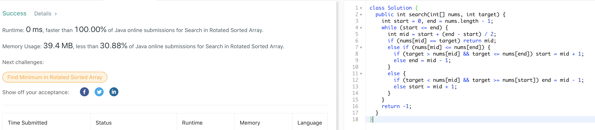34. Find First and Last Position of Element in Sorted Array
官方思路:
- 线性扫描 二分查找，推荐这种易懂写法
思路整理：
方法一比较简单，从头找一次从尾找一次即可，重点看下二分查找。优先要求logn数组又是有序的，也就是钦定了二分查找的思路。依旧是二分查找的一个变形，因为让找最靠左和靠右的两个target，所以需要在找到一个target后不立刻返回，而是 继续向左或者向右寻找，并在每次循环结束前更新最新一次匹配到target时的下标并最后返回即可。具体实现时向左找当nums【mid】大于等于target时继续向左缩小范围，向右找时当nums【mid】小于等于target时继续向右缩小范围，其余操作 与普通二分查找无异。最后分别将向左寻找和向右寻找的最后一次匹配到target时记录的下标存入数组返回即可。
35. Search Insert Position
官方思路:
- 二分查找
思路整理：
答案思路是二分查找，个人意见是此题无需特意查找target，有则返回，没找到则返回第一个比target大的数字下标即可。注意当遇到整个数组都小于target的情况需返回数组长度，设置为默认值即可。当然一遍循环在最坏情况下（n）复杂度是要高于二分查找（logn）的。 二分查找思路为了处理找不到的情况也是将返回值默认设置为left，也就是第一个比target大的数字下标。
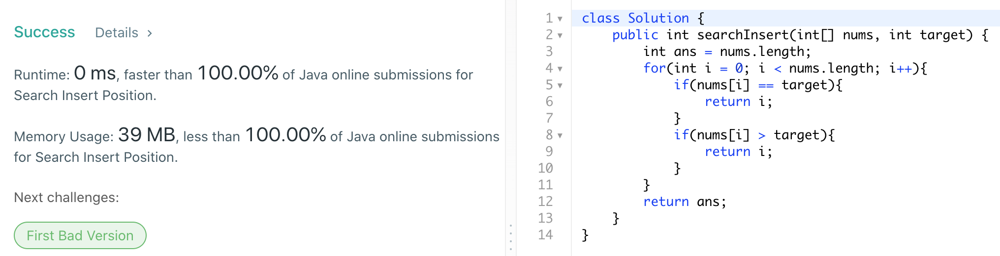36. Valid Sudoku
官方思路:
- 一遍循环
思路整理：
根据题目规定，我们要做的就是对每一行每一列和每一个盒子做查重，没有重复就返回true，有则返回false。查重常用的数据结构就是hashmap，根据简直对数量来查重。hashet在这里并不适用，因为hashset不允许有重复的值，也就是说即使已经重复了我们也无法判断出来， 将已经有的值插入hashset并不会有任何变化，所以这里选择用hashmap来查重。那么现在就要建立三组hashmap，分别对应row，columns和box，根据九宫格性质每组需要九个hashmap元素。一个很自然的想法就是用三个长度为9的数组来存储这些hashmap，分别命名为rows， columns和boxes。下一个问题出现了，行和列的下标都很好确定，盒子的下标如何确定呢？这就要靠找规律了，很快发现盒子对应数组下标的位置可以用（i/3）*3 + （j/3）来表示。这样所有思路就理清了。下一步只需要遍历这个二维数组开始装填我们的三个hashmap数组就 可以了。遍历中每一个元素（这里只关心不是“.”的元素即可）被分别装填到他所在行，列和盒子所在的hashmap数组的对应hashmap中。可以理解为有27个hashmap分别对应着9行，9列和9个盒子，这其中每一个hashmap都不能有任何一个键对应的值超过1（出现重复）。在每一轮 循环的最后加一个判断，当有任何数字被加进对应的三个hashmap并使得hashmap出现重复值时返回false。这里需要了解hashmap的getordefault方法，当遇到一个没见过的键时将其加入hashmap并且值设置为1，当遇到一个见过的键时直接更新其值为之前的值+1。
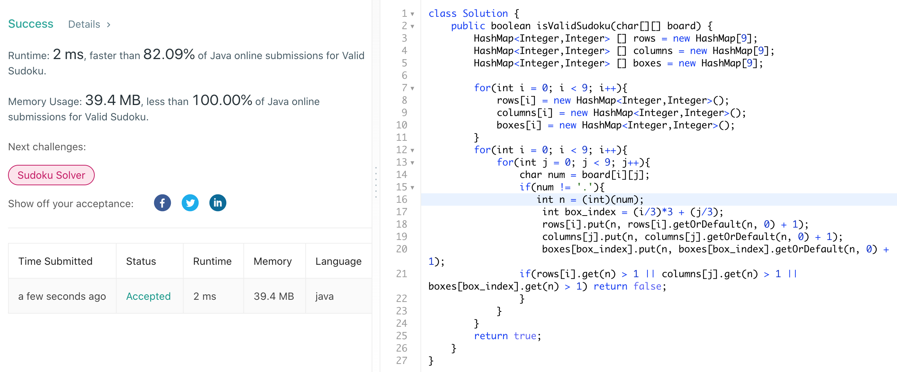38. Count and Say
官方思路:
- 滑动窗口
- 正则
思路整理：
推荐评论区看到的写法，比较易懂。这道题要求每次对上一个字符串做一定的操作，并且重复一定的次数后返回最终的结果字符串。那么就做双重循环，大循环做n次读取，小循环具体处理更在结果字符串的操作。那么很自然大循环一共n-1次，因为初始字符串无需读取，设置为1即可。 关键在于内循环如何读取并更在字符串。首先我们需要一个变量来存储当前字符出现了多少次，设为count初始值为1，设置一个初始的空stringbuilder sb来构造新字符串。此时注意在两种条件下需要更新sb，第一，出现了跟前一个字符不一样的字符，此时先append count，然后append 当前字符的前一个字符，最后重制count为1为下一次计数作准备。第二种情况就是当内循环指针j达到当前读取字符串长度时，需要做相同的操作，这种情况较容易忽略导致读取不完整。内循环结束后将结果更新为当前sb并进入下一次大循环即可。
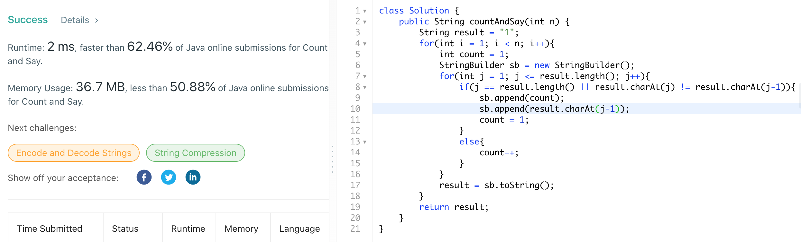39. Combination Sum
官方思路:
- 无
思路整理：
这种找出不定数目的组合题型立马想到backtracking，具体做法类似之前的17或者22题。主方法里为辅助方法传入初始值，在辅助方法里完成整个回溯是这种问题的一般结构，之后就是思考具体需要那些参数以及终止条件是什么。首先结果集和原始数组肯定 要传进来，其次就是每次迭代中生成单个arraylist（结果集候选人）的templist，其次需要一个指针来遍历candidates，记录每次回溯的位置避免重复或者漏掉，最后需要一个变量来记录当前templist的sum或者距离target还差多少，这里用了距离target 的差，用remain表示。终止条件自然就是当remain等于0也就是找到了一个满足条件的arraylist，加入结果集，当remain大于0时继续递归地尝试下一个组合。通过指针遍历candidates，顺序地加入templist并调用辅助方法寻找可能的结果，不论这次查找有没有 找到符合条件的结果，都要在循环结束时移除当前指针所指向的数字，因为这次没找到不代表之后也找不到。比如从3开始找的时候3，6加起来大于7来也就是没找到，但是后续的7直接就找到了。所谓回溯其实就是在没找到（或者找到）时沿着来的路返回一步，在当时 的其他分叉路口继续做尝试。有一个小细节可以提升这道题的速度，即把数组提前排序，在循环中检查remain是否已经比当前指针的数字小了，如果是的话直接结束当前循环。比如例子中从6开始尝试时，剩余的1已经比6要小了，说明后续不可能找到结果就直接进入下一轮循环， 这个细节可以提速不少。
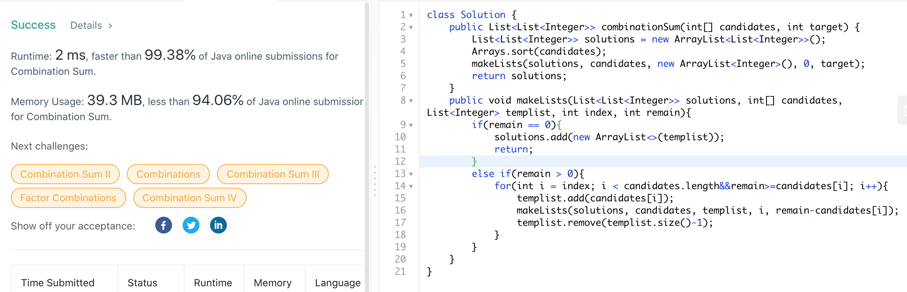40. Combination Sum II
官方思路:
- 无
思路整理：
同样还是回溯，这次不允许重复使用同一个元素，这就需要每次强制让index指针向后移动一位。但是这样依然有可能找到重复的元素，例如1，1，2，5，6，7，10找和为8，第一个1时找到125，第二个1时又会找到125，这是不允许的。为了解决去重复问题， 我们可以利用回溯的性质，当遍历中出现后一个数字和前一个数字相等并且此时i大于index时则跳过这次循环，只有当第一个数字所有可能性都被遍历并且回溯之后才可能出现i大于index的情况，因为此时index的值为0。换句话说就是出现了一个跟已经找过 的数字一样的数字，即跳过。初次找1的时候不可能出现这种情况，因为此时index值为1，i的值也为1，两者是相等的。只有当回溯后index值才会减少，此时i仍然从index处开始遍历，当遇到后一个数字和前一个数字相同是，这个数字的所有可能性必然都被 探索过了。非常巧妙的处理方法。
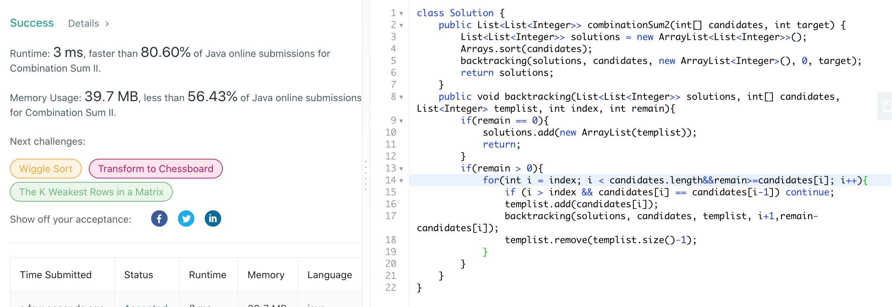43. Multiply Strings
官方思路:
- 无
思路整理：
此题有一个技巧，就是一个char减去一个char0之后就可以转换成int。这样做的主要目的是为了把string拆分成一个个int。知道了这个后就要回归乘法的本质，可以把整个乘法转换成两轮加法，每一轮又是若干两两个位数相乘的和。比如123乘以45，先用个位的 5乘以123，得到百位的5，十位的10和个位的15，以此类推。如果不考虑进位的话每个两数之乘积的位置都是固定的，即i+j+1，有进位则只能进到i+j的位置。而要解决进位的问题也很容易，只需要在每次更新数组对应位置时，对i+j位置做一次对10取整操作，对i+j+1 位置做一次为10取模操作。例如原本十位是5，新的乘积为9，则先更新十位为14，百位更新14/10等于1，数位随即更新为14%10等于4。其他要注意的点包括要从后向前遍历双循环，避免潜在的进位问题，因为进位是从右向左进位的。其次就是使用stringbuilder构建 答案时注意把前面多余的0去掉，但是只有一个0的数组为特殊情况，作为corner case处理。
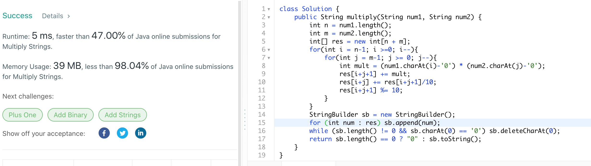46. Permutations
官方思路:
- 回溯
思路整理：
经典的回溯题，终止条件很明显就是当templist（每条线程中构建的list candidate）长度达到nums的长度时添加到答案集。然而保证正确性的前提是每次向templist添加的数字不能是之前添加过的，要保证这个也很简单，在添加之前判断下templist里是否已经包含某个 nums中的数字，有的话直接跳过即可。其他的操作就是常规回溯递归调用辅助方法，单个调用完成后移除templist最后一个数字达到回溯的目的。
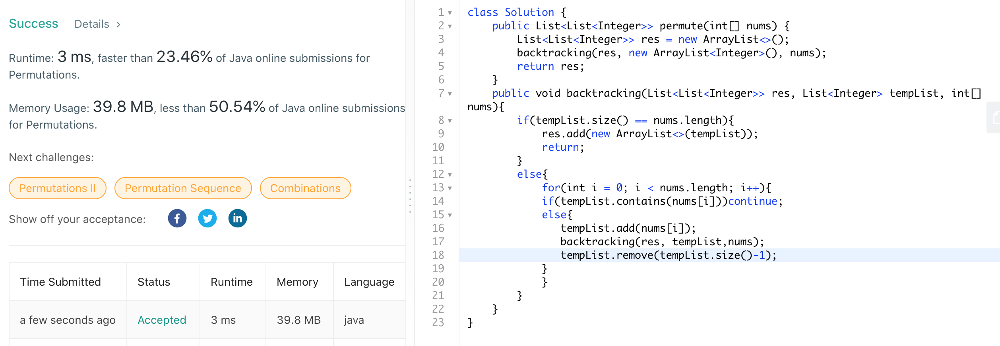47. Permutations II
官方思路:
- 无
思路整理：
上一道题的变形，可以类比第40题。上一次初始数组既是无重复状态，所以去重复只需要判断数字在templist里是不是已经出现过，这道题就行不通了，比如1，1，2用这种方法就没法把第二个1正确添加进templist导致错误。为了解决不重复使用已经使用过的元素，可以构造一个 boolean值组成的数组visited爱专门记录哪些元素已经被添加进templist里了，需要注意在backtracking后和templist一起做回溯操作，即将visited【i】改为false。其次要注意的一点是光是不重复添加已经添加过的元素无法完美达到去重复的目的，当数组中有多个重复 数字时依然会产生重复的templist，比如1，1，1，2在顺序添加完1，1，1，2和1，1，2，1后便会找到第一个1，第三个1，第二个1和第四个2组成的另一个不同的1，1，1，2，显然我们要避免这种重复的出现。和第40题类似，我们在进入回溯前现将数组排好序，在遍历中一旦遇到 第i个数字和第i-1个数字相同的情况就跳过，这样就解决了重复添加的问题。有趣的是这样的话相当于每当出现多个重复的数字时选择的是逆序的那一个，比如第一个1，1，1，2的顺序其实是2，1，0，3，这样速度是不如直接选择正序快。要变成只添加正序的那一组排列只需要把visited【i-1】 变为！visited【i-1】即可，这样第一个1，1，1，2添加顺序就是首先找到的index 0，1，2，3后面重复的直接跳过了避免了浪费时间。如此操作只需要1ms，但是比较难想到因为利用了回溯的性质。
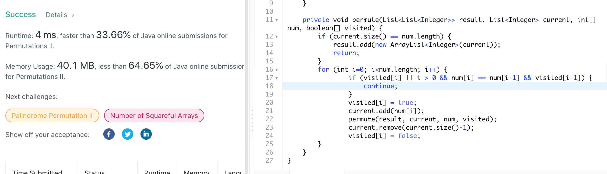